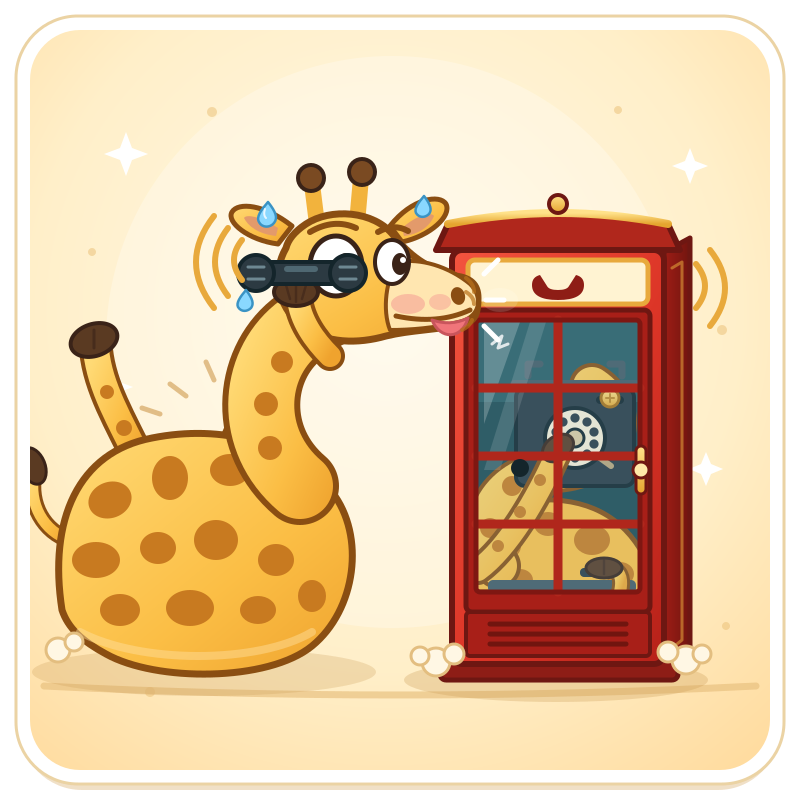
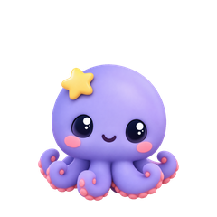

Tencent Hy4 solo: 5 tests, one shot each
One prompt per test, no fixes, no hints. Play the results right here.
Один промпт на тест, без правок и подсказок. Всё, кроме питомца, работает прямо в браузере.
· Prompts, code and costs on GitHub
· Telegram
1 · SVG animation · SVG-анимация
A giraffe trying to squeeze into a tiny phone booth to make a call. Жираф лезет в крошечную телефонную будку, чтобы позвонить.
Open · Открыть
2 · Rube Goldberg machine · Машина Голдберга
Wake a sleeping hamster in the silliest way possible. Press Start. Разбудить спящего хомяка самым нелепым способом, жми Start.
Play · Играть3 · Desktop pet Octo · Питомец Окто
Hy4 picked its own animal: an octopus, «eight tentacles = eight tasks at once». A Windows app, so it is a download, not a web page.
Hy4 сама выбрала зверя и нарисовала себя осьминогом. Это программа для Windows: скачай, поставь pip install PySide6 и запусти run.bat.

4 · Mini golf · Мини-гольф
It got our three hand-drawn holes and invented a better one: portal, magnet, ice, a short risky route and a long safe one. Drag back from the ball and release; O = blueprint overlay. Оттяни от мяча и отпусти, O накладывает чертёж.
Play · Играть Blueprint · Чертёж5 · Hamster habitat · Клетка с хомяками
A low-poly colony that lives for generations. Click a hamster to follow it, speed up to ×4. Клик по хомяку, ускорение до ×4.
Open · ОткрытьTime and cost · Время и цена
At CometAPI prices. Test 1 in Claude Code, tests 2 to 5 in OpenCode.
| Test | Time | Cost |
|---|---|---|
| 1 SVG | 14 min | $0.89 |
| 2 Goldberg | 37 min | $0.74 |
| 3 Desktop pet | 66 min | $0.86 + kie.ai $0.42 |
| 4 Mini golf | 50 min | $0.87 |
| 5 Hamsters | 37 min | $0.82 |
| Total | 3 h 25 min | $4.17 + $0.42 |